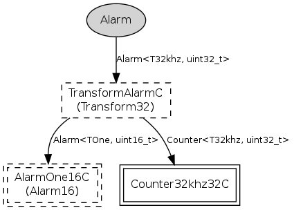

32-bit 32kHz Alarm component as per TEP102 HAL guidelines. The mica family 32kHz Alarm is built on hardware timer 1, and actually runs at CPU frequency / 256. You can use the MeasureClockC.cyclesPerJiffy() command to figure out the exact frequency.
Upto three of these alarms can be created (one per hardware compare register). Note that creating one of these Alarms consumes a 16-bit 32kHz Alarm (see Alarm32khz16C).
